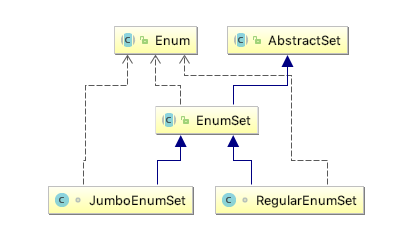

Thinking in Java 20 - Enumerated Types¶
When you create an
public abstract class Enum<E extends Enum<E>> implements Comparable<E>, Serializable
The definition means that the type argument for
public class StatusCode extends Enum<StatusCode>
Using static imports with enums¶
The
// Spiciness.java public enum Spiciness { NOT, MILD, MEDIUM, HOT, FLAMING } // Burrito.java import static Spiciness.*; public class Burrito { Spiciness degree; public Burrito(Spiciness degree) { this.degree = degree;} public String toString() { return "Burrito is "+ degree;} public static void main(String[] args) { System.out.println(new Burrito(NOT)); System.out.println(new Burrito(HOT)); } }
Adding methods to an enum¶
Except for the fact that you can’t inherit from it, an
public enum OzWitch { // Instances must be defined first, before methods: WEST("Miss Gulch, aka the Wicked Witch of the West"), SOUTH("Good by inference, but missing"); private String description; // Constructor must be package or private access: private OzWitch(String description) { this.description = description; } public String getDescription() { return description; } public static void main(String[] args) { for(OzWitch witch : OzWitch.values()) print(witch + ": " + witch.getDescription()); } }
Also you can overriding
The mystery of values()¶
The method
The compiler automatically adds some special methods when it creates an enum. For example, they have a static values method that returns an array containing all of the values of the enum in the order they are declared. This method is commonly used in combination with the for-each construct to iterate over the values of an enum type. [Java Tutorials - Enum Type]
Implements, not inherits¶
All
Using EnumSet instead of flags¶
The
package java.util; public abstract class EnumSet<E extends Enum<E>> extends AbstractSet<E> implements Cloneable, java.io.Serializable
当
// The class of all the elements of this set. final Class<E> elementType; // All of the values comprising T. (Cached for performance.) final Enum<?>[] universe; // Creates an empty enum set with the specified element type. public static <E extends Enum<E>> EnumSet<E> noneOf(Class<E> elementType) { Enum<?>[] universe = getUniverse(elementType); if (universe == null) throw new ClassCastException(elementType + " not an enum"); if (universe.length <= 64) return new RegularEnumSet<>(elementType, universe); else return new JumboEnumSet<>(elementType, universe); }

对于
// RegularEnumSet.java // Bit vector representation of this set. // The 2^k bit indicates the presence of universe[k] in this set. private long elements = 0L; // JumboEnumSet.java // Bit vector representation of this set. The ith bit of the jth // element of this array represents the presence of universe[64*j +i] // in this set. private long elements[];
Using EnumMap¶
An
public class EnumMap<K extends Enum<K>, V> extends AbstractMap<K, V> implements java.io.Serializable, Cloneable private final Class<K> keyType; // Array representation of this map. private transient Object[] vals;
public boolean containsKey(Object key) { return isValidKey(key) && vals[((Enum<?>)key).ordinal()] != null; }
再来看看
public V put(K key, V value) { typeCheck(key); int index = key.ordinal(); Object oldValue = vals[index]; vals[index] = maskNull(value); if (oldValue == null) size++; return unmaskNull(oldValue); }